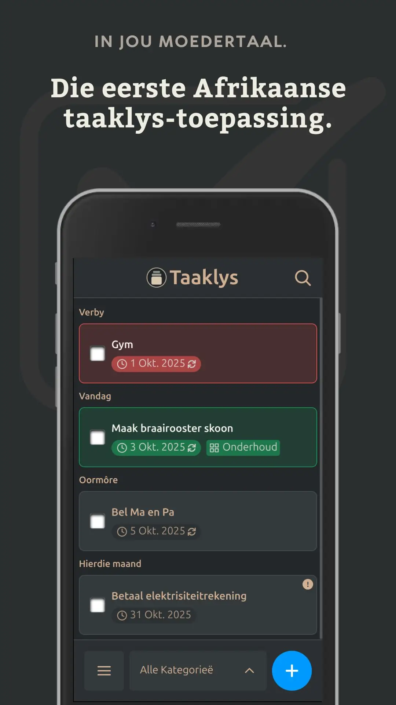
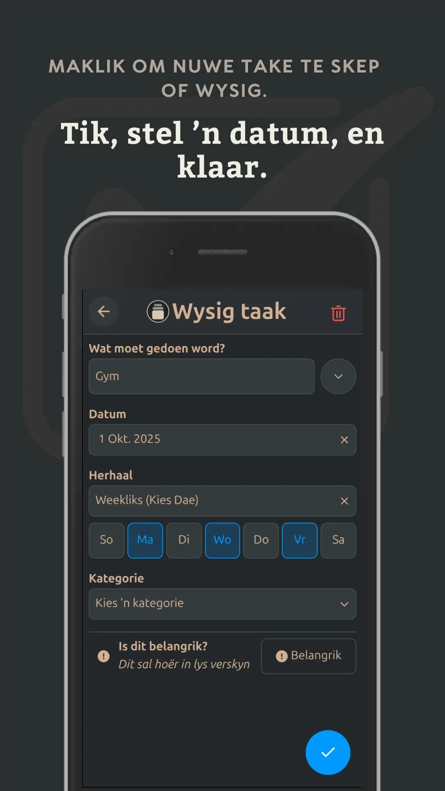
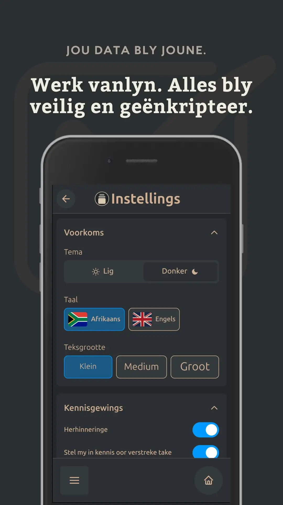

Doenit – Die Afrikaanse ToDo/Taaklys toepassing
Organiseer jou lewe eenvoudig, in jou eie taal. Geen internet nodig, geen geraas — net jy en jou take.
📲 Kry dit op Google PlayHoekom Doenit?
🕒 Herhalende take
Stel herinnerings op vir enige tydsinterval — daagliks, weekliks of elke paar maande.
🔒 Vanlyn & veilig
Jou data bly op jou toestel, geënkripteer. Niks word aanlyn gestoor nie, tensy jy dit kies.
🧩 Maklike kategorieë
Hou werk, huis en familie take apart met eenvoudige groepering en duidelike etikette.
🎨 Lig of donker tema
Pas Doenit aan by jou styl — kies lig of donker in Instellings → Voorkoms.
👥 Binnekort
Deel take met vriende en familie. Bou saam aan doelwitte en roetines.
Kyk hoe eenvoudig dit is
  
Betroubaar en oopbron
Doenit is volledig oopbron — jy kan self die kode sien op GitHub. Geen data word aanlyn gestoor nie, tensy jy rugsteun aktiveer.
Word deel van die Doenit gemeenskap
Gesels saam oor voorstelle, nuwe idees en verbeterings by r/Doenit.